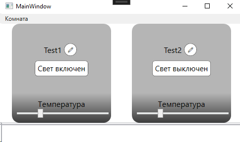
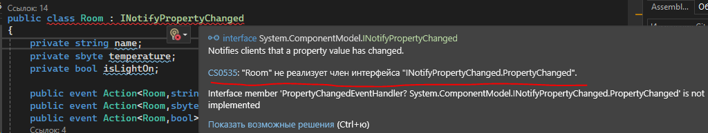
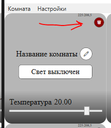
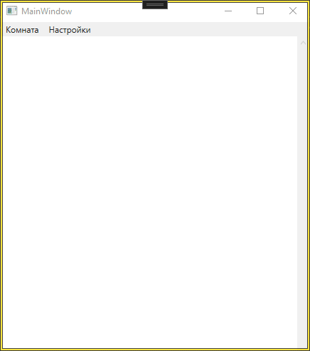

Шаг за шагом 5 лаба
Вступление
Данный текст содержит описание хода работы.
Данная лабораторная работа посвящена:
- Написанию компонент;
- Стилям;
- Анимации;
- Конвертерам значений.
Мы создадим собственную компоненту для визуального представления класса Room, опишем основные стили для используемых элементов и компонентов, сделаем анимированные элементы, и сделаем привязку данных с использованием конверторов типов данных.
Эти методы позволяют создавать более модульные, настраиваемые и визуально привлекательные пользовательские интерфейсы.
С прошлой лабораторной работы у нас осталась программа, в которой реализовано хранение объектов Room в списке, с привязкой выбранного объекта в DataContext и отображение свойств объекта в графическом интерфейсе.
В прошлой работе мы выделяли основные свойства для нашего класса Room и создали класс - шаблон. Аналогично созданию шаблона объекта, мы можем создать шаблон графического представления этого объекта.
Функционал по добавлению и удалению комнат остается в основном окне. Функционал по изменению свойств комнаты переезжает в UserControl компоненту.
Давайте договоримся: в этом материале UserControl = RoomControl = пользовательский элемент управления.
Все названия переменных необязательно повторять - вы можете называть переменные по своему. Не забывайте только дальше использовать ваши названия.
Техническое задание на 5 лабораторную
Требования к программе, необходимы для сдачи.
Создание UserControl
Компонентно-ориентированное программирование (CBP) — это подход к разработке программного обеспечения, основанный на использовании слабо связанных независимых программных компонентов в единой программной системе
User Control — пользовательский элемент управления, который предоставляет простой способ создания собственных элементов управления из атомарных элементов.
Можно сказать, что это визуальный аналог класса - мы также выявляем основные свойства объекта, только в его визуальном представлении.
Пример реализации интерфейса с использованием компонент:

Обратите внимание, что это просто обобщенный пример, и не обязательно следовать ему точь в точь. В примере вместо комнат используются устройства, но мы будем делать именно комнаты.
Основные элементы управления, необходимые для взаимодействия с кнопкой можно взять из прошлой работы:
TextBlock- для вывода названия комнаты;Slider- для изменения температуры комнаты;Button- вместоCheckBoxдля изменения состояния света.
Пример создания UserControl.
Реализованный пример:

RoomControl.xaml
<UserControl x:Class="lab3.RoomControl"
xmlns="http://schemas.microsoft.com/winfx/2006/xaml/presentation"
xmlns:x="http://schemas.microsoft.com/winfx/2006/xaml"
xmlns:mc="http://schemas.openxmlformats.org/markup-compatibility/2006"
xmlns:d="http://schemas.microsoft.com/expression/blend/2008"
xmlns:local="clr-namespace:lab3" xmlns:sys="clr-namespace:System;assembly=mscorlib"
mc:Ignorable="d"
d:DesignHeight="200" d:DesignWidth="200"
Height="200" Width="200"
>
<!-- Контейнер с бордером -->
<Border d:Background="White">
<Grid>
<!-- Определение строк в Grid -->
<Grid.RowDefinitions>
<RowDefinition Height="4*"/>
<RowDefinition Height="1.5*"/>
</Grid.RowDefinitions>
<!-- Панель с кнопкой -->
<StackPanel Grid.Row="0" HorizontalAlignment="Center" VerticalAlignment="Center">
<StackPanel Orientation="Horizontal">
<TextBlock Text="Название комнаты" FontSize="16"/>
<Button Content="⚙️" Height="30" Width="30" />
</StackPanel>
<Button Click="ButtonBase_OnClick" d:Content="Тут будет состояние света"/>
</StackPanel>
<!-- Панель со слайдером и текстом -->
<StackPanel Grid.Row="1" Margin="5">
<TextBlock Text="Температура" HorizontalAlignment="Center"/>
<Slider/>
</StackPanel>
</Grid>
</Border>
</UserControl>
Создание стилей
Мы описали разметку для компоненты. Теперь мы сразу опишем стили для элементов этой компоненты. Описание стиля в одном месте позволит сделать более модульной и простой работу с этим стилем. Также это позволит менять настройки стиля в одном месте.
Для создания стиля нужно нажать ПКМ по названию проекта -> Добавить -> Создать элемент -> Словарь ресурсов.
Пример со стилем

Применим остальные стили кнопок:

Расширение функционала компоненты
Вернемся к написанию функционала для компоненты.
Добавим поле Room в компоненту. В работе мы будет назначать в DataContext компоненты конкретный объект Room, а в основной программе будем хранить список наших компонент RoomControl, вместо списка Room.
Добавляем объект класса
В файл RoomControl.xaml.cs (название вашей компоненты) добавим поле и свойство Room:
private Room currentRoom;
public Room CurrentRoom
{
get
{
return currentRoom;
}
set
{
currentRoom = value;
}
}
Реализуем дополнительный конструктор класса RoomControl.xaml.cs, принимающий как аргумент объект Room:
public RoomControl()
{
InitializeComponent();
//Стандартный конструктор, который ничего не делает
}
public RoomControl(Room r)
{
InitializeComponent();
CurrentRoom = r;
DataContext = CurrentRoom;
//Наш конструктор - получает комнату r и записывает ее в CurrentRoom
//Затем назначает контекст данных из CurrentRoom для компоненты
}
Привяжем название комнаты и состояние света:
<!-- Панель с кнопкой -->
<StackPanel Grid.Row="0" HorizontalAlignment="Center" VerticalAlignment="Center">
<StackPanel Orientation="Horizontal" HorizontalAlignment="Center">
<TextBlock Text="{Binding Name}" FontSize="16" VerticalAlignment="Center"/>
<Button Content="✏️" Height="25" Width="25" Style="{StaticResource SettingButton}" />
</StackPanel>
<!--Ниже кнопка для изменения состояния света-->
<!--Мы не можем привязать к ней напрямую bool значение-->
<!--Поэтому мы привяжем логическое значение и используем конверт значений-->
<!--В нашем случае это myBoolConverter из bool в string-->
<Button Click="ButtonBase_OnClick" Content="{Binding Path=IsLightOn, Converter={StaticResource myBoolConverter}}" d:Content="Тут будет состояние света" Style="{StaticResource GrayButton}" />
</StackPanel>
ValueConverter - конверт типов данных в привязке
Про создание конвертора и что это такое
Привязка состояния света осуществляется к тексту кнопки с использованием конвертора.
Мы будем использовать конвертир в 2ух случаях:
- Конвертация bool -> string для вывода состояния света в текст кнопки;
- Конвертация bool -> LinearGradien для смены цвета фона компоненты (Вкл\Выкл свет).
Пример преобразования значения bool -> string описан в примере. Конвертацию bool -> LinearGradien (градиент) нужно реализовать самостоятельно.
Примерный алгоритм: - В файле стилей нужно создать градиент:
<LinearGradientBrush StartPoint="0.5,1" EndPoint="0.5,0" x:Key="GrayGradientBrush">
<GradientStop Color="#3C3C3C" Offset="0" />
<GradientStop Color="#FFB5B5B5" Offset="0.3" />
</LinearGradientBrush>
<LinearGradientBrush StartPoint="0.5,1" EndPoint="0.5,0" x:Key="YellowGradientBrush">
<GradientStop Color="RosyBrown" Offset="0" />
<GradientStop Color="Wheat" Offset="0.25" />
</LinearGradientBrush>
- В конверторе нужно преобразовать
boolвLinearGradienBrushСпособ получения объекта градиентной кисти в коде:
Эта строка получает из ресурсов приложения (Application.Current.Resources) объект с ключом (x:Key) YellowGradientBrush и приводит его к типу LinearGradientBrush, который может быть назначен свойству Background у элемента интерфейса.
Пояснение:
Application.Current.Resources["YellowGradientBrush"] — извлекает ресурс с заданным ключом.
(LinearGradientBrush) — приводит полученный ресурс к типу LinearGradientBrush, чтобы использовать его как кисть в привязке для закраски градиентом.
- Привязать значение
IsLightOnк фону компоненты с использованием конвертора.
У вас должно получится 2 конвертора значений.
Добавление UserControl
В основное окно программы при вызове конструктора добавим 2 проверочных RoomControl в ObservableCollection:
public ObservableCollection<RoomControl> rooms { get; set; }
public MainWindow()
{
rooms = new ObservableCollection<RoomControl>();
rooms.Add(new RoomControl(new Room("Test1", 20, true)));
rooms.Add(new RoomControl(new Room("Test2", 20, false)));
DataContext = this;
}
Код разметки контейнера для хранения наших RoomControl:
<ScrollViewer Height="450" VerticalScrollBarVisibility="Visible" HorizontalScrollBarVisibility="Disabled">
<ItemsControl ItemsSource="{Binding rooms}">
<ItemsControl.ItemsPanel>
<ItemsPanelTemplate>
<UniformGrid Columns="2" HorizontalAlignment="Stretch" VerticalAlignment="Stretch"/>
</ItemsPanelTemplate>
</ItemsControl.ItemsPanel>
<ItemsControl.ItemTemplate>
<DataTemplate>
<local:RoomControl Margin="10"/>
</DataTemplate>
</ItemsControl.ItemTemplate>
</ItemsControl>
</ScrollViewer>
ScrollViewerScrollViewer— это контейнер, который позволяет прокручивать содержимое, если оно не помещается по размеру.Height="450"— задает высоту области для прокрутки.VerticalScrollBarVisibility="Visible"— вертикальная полоса прокрутки всегда видна, если содержимое не помещается.HorizontalScrollBarVisibility="Disabled"— горизонтальная полоса прокрутки будет скрыта, даже если содержимое не вмещается по ширине.
ItemsControlItemsControl— это контейнер для отображения коллекции данных (например, списка). Он автоматически создает визуальные элементы для каждого объекта в источнике данных.ItemsSource="{Binding rooms}"— привязка данных. Мы привязываем коллекциюroomsиз модели представления (например, список объектов комнат) к этомуItemsControl. Это значит, что каждый элемент в спискеroomsбудет представлен в UI.
ItemsPanelTemplateItemsPanelTemplate— это шаблон для панели, в которой будут располагаться элементы. Он позволяет задать, как именно будут расположены все элементы вItemsControl.UniformGrid— это панель, которая располагает элементы в сетке с одинаковыми размерами ячеек.Columns="2"— задаёт количество столбцов в сетке. Здесь 2 столбца.HorizontalAlignment="Stretch"иVerticalAlignment="Stretch"— заставляют ячейки растягиваться по горизонтали и вертикали, чтобы максимально заполнять доступное пространство.
ItemTemplateItemTemplate— это шаблон для отображения каждого элемента в коллекции. Он определяет, как каждый объект изroomsбудет выглядеть на экране.DataTemplate— это шаблон данных, который можно применить к каждому элементу в коллекции.<local:RoomControl Margin="10"/>— это пользовательский элемент управленияRoomControl, который будет отображаться для каждого элемента коллекцииrooms.Margin="10"добавляет отступы вокруг этого элемента.- Примечание:
local— это пространство имён, которое связано с проектом. Оно указывает, что мы используем кастомный элемент управленияRoomControlиз текущего пространства имён.
- Примечание:
При запуске программы мы увидим следующее:

В поле названия комнаты привязалось название комнаты объекта, переданного в RoomControl, в кнопку привязалось состояние света, конвертированное в строку.
Для переключения состояния света можно использовать простой метод-обработчик нажатия на кнопку:
RoomControl.xaml.cs
private void ButtonBase_OnClick(object sender, RoutedEventArgs e)
{
currentRoom.IsLightOn = !currentRoom.IsLightOn;
}
RoomControl.xaml
<Button Click="ButtonBase_OnClick" Content="{Binding Path=IsLightOn, Converter={StaticResource myBoolConverter}}" d:Content="Тут будет состояние света" Style="{StaticResource GrayButton}" />
При нажатии на кнопку состояние IsLightOn в Room будет переключаться, но на компоненте текст останется тем же. Это происходит из-за того, что графический интерфейс не знает о произошедшем изменении.
Для оповещения графического интерфейса об произошедшем изменении мы должны реализовать интерфейс INotifyPropertyChanged.
Оповещение об изменении состояния INotifyPropertyChanged
Подробно про интерфейсы и пояснение этих строк кода тута
Для оповещения интерфейса о изменении свойства мы должны наследовать интерфейс INotifyPropertyChanged:
Обратите внимание, что мы получим ошибку:

Интерфейс INotifyPropertyChanged должен обязательно реализовывать метод OnPropertyChanged и событие PropertyChanged. Пример реализации:
public event PropertyChangedEventHandler PropertyChanged;
public void OnPropertyChanged([CallerMemberName] string prop = "")
{
if (PropertyChanged != null)
PropertyChanged(this, new PropertyChangedEventArgs(prop));
}
Пример использования:
public bool IsLightOn
{
get => isLightOn;
set
{
isLightOn = value;
OnLightStateChanged?.Invoke(this,isLightOn);//наше прошлое событие
OnPropertyChanged(nameof(IsLightOn));//вызов метода для оповещения
//графического интерфейса,
}
}
Теперь для всех участвующих в привязке свойств класса Room мы можем использовать метод OnPropertyChanged.
Анимация удаления на Action
Для примера мы сделаем анимацию с использованием класса Task. Предложенный пример без использования потоков будет блокировать выполнение основной программы.
В пояснении выше упоминается Thread. Для выполнения работы следует использовать Task.
Общая идея анимации: после нажатии на кнопку удаления у объекта RoomControl начнется уменьшение этого объекта (Height и Width), при достижении высоты или ширины меньше, например, 10 - объект будет вызывать событие удаления этого объекта.
Код ниже расположен в вашем коде для RoomControl
Пример анимации удаления объекта:
private void RemoveAnimation()
{
Task.Run(() => { //Запускаем задачу-таску для работы параллельно основной программе
while (true) { //Бесконечный цикл, который мы прервем когда размер будет нужным
double height = 0; //Объявляем переменные для разамеров объекта
double width = 0;
// Считываем размеры через Dispatcher
Dispatcher.Invoke(() => { //Используем Dispatcher.Invoke, так как мы НЕ МОЖЕМ взаимодействовать с основным потоке, а RoomControl находится как бы там.
height = ActualHeight; //Записываем в наши переменные высоты и ширины актуальные размеры элемента.
width = ActualWidth;
});//Вот тут кончилась работа Dispatcher.Invoke.
if (height <= 10 || width <= 10) { //Проверяем размер окна
Dispatcher.Invoke(() => {
RemoveControl?.Invoke(this);//Также в Dispatcher.Invoke вызываем обработчик события удаления (про это будет подробнее ниже).
});
break; //Выходим из бесконечного цикла while, так как выполнилось условие
}
//Уменьшаем размеры через Dispatcher каждую итерацию
Dispatcher.Invoke(() => {
Height = (height - 1);//Важно: инкремент и дикремент (+= и -=) не сработают.
Width = (width - 1);
});
Thread.Sleep(2); //Ждем 2 миллисекунды для имитации плавной анимации.
}
});
}
Обратите внимание: созданные нами потоки в C# не могут напрямую обновлять UI элементы, так как они работают в разных потоках. Основной поток (UI поток) отвечает за обновление интерфейса.
- Чтобы безопасно обновить UI из другого потока, нужно использовать
Dispatcher.Invoke, который выполняет код в основном потоке, обеспечивая корректную работу с элементами интерфейса.
Механика удаления компоненты
Все наши RoomControl хранятся (должны храниться) в списке rooms в основной программе MainWindow.xaml.cs. В самой компоненте создадим кнопку для удаления.

Именно по нажатию на эту кнопку будет запускаться анимация удаления.
Так как кнопка находится в самом RoomControl мы сталкиваемся с проблемой:
- RoomControl выполняет код анимации внутри себя.
- Для удаления компоненты нужно удалить ее из списка rooms.
- RoomControl не может получить доступ к списку rooms.
Для решения данной проблемы мы воспользуемся механизмом событий. Событие позволит нам вызвать обработчик из RoomControl, который будет находится в MainWindow.
Тогда общий алгоритм удаления компоненты будет выглядеть так:
1. При создании компоненты в главном окне мы будем подписывать на событие в компоненте обработчик удаления.
2. Мы нажимает на кнопку "удалить компоненту" в компоненте.
3. Запускается код анимации удаления.
4. Когда выполняется условие размера (меньше 10), мы вызываем обработчик удаления, который находится в главном окне.
5. Этот обработчик удаляет из списка rooms ту компоненту, которая вызвала это события.
Объявление события:
public partial class RoomControl : UserControl
{
public event Action<RoomControl> RemoveControl;
//Создаем событие, обработчик которого будет принимать в качестве аргумента `RoomControl`
//ниже будет конструктор, функции и так далее.
В коде анимации уменьшения:
if (height <= 10 || width <= 10)
{
Dispatcher.Invoke(() =>
{
RemoveControl?.Invoke(this);//Вызываем обработчик этого события, передаем туда this - этот объект, в котором мы находимся.
});
break;
}
Создание компоненты тогда будет выглядеть следующим образом:
//Предполагается, что этот код будет вызыватся при нажатии на кнопку "добавить"
Room newRoom = new Room("Название комнаты", 20, false);//Создаем КОМНАТУ (не компонент)
RoomControl newRoomControl = new RoomControl(newRoom);//Создаем новый компонент в который передаем созданную комнату
newRoomControl.RemoveControl += RemoveRoomControlUI; //Подписываем обработчик удаления для события `RemoveControl` из компоненты.
rooms.Add(newRoomControl); //Добавляем в список.
Код удаления компоненты из списка:
void RemoveRoomControlUI(RoomControl c)
{
rooms.Remove(c); //Просто удаляем из списка объект, переданный из компоненты.
//Этим объектом будет сама компонента.
}
Таким образом: компонента сообщает главному окну что ее нужно удалить.
Смена темы оформления
В данном примере будет рассмотрен пример изменения темы оформления путем замены словаря в ресурсах.
Допустим у нас есть 2 файла: для темной и светлой темы - DarkTheme.xaml и LightTheme.xaml. В этих файлах мы опишем стили для темной и светлой темы соответственно.
Пример DarkTheme.xaml
<ResourceDictionary xmlns="http://schemas.microsoft.com/winfx/2006/xaml/presentation"
xmlns:x="http://schemas.microsoft.com/winfx/2006/xaml">
<Style x:Key="WindowStyle" TargetType="Window">
<Setter Property="Background" Value="DarkGray" />
</Style>
</ResourceDictionary>
Пример LightTheme.xaml
<ResourceDictionary xmlns="http://schemas.microsoft.com/winfx/2006/xaml/presentation"
xmlns:x="http://schemas.microsoft.com/winfx/2006/xaml">
<Style x:Key="WindowStyle" TargetType="Window">
<Setter Property="Background" Value="White" />
</Style>
</ResourceDictionary>
В данном файле описан стиль для окон. В нем задаются значения свойств Background на темный и белый соответственно. Обратите внимание на то, что ключи x:Key в обоих файлах одинаковые WindowStyle, TargetType - Window.
Для использования стиля в главном окне MainWindow.xaml у тэга Window (самый верхний элемент) нужно прописать название стиля (x:Key):
Style="{DynamicResource Название_стиля}"
<Window x:Class="ваш_проект.MainWindow"
xmlns="http://schemas.microsoft.com/winfx/2006/xaml/presentation"
xmlns:x="http://schemas.microsoft.com/winfx/2006/xaml"
xmlns:d="http://schemas.microsoft.com/expression/blend/2008"
xmlns:mc="http://schemas.openxmlformats.org/markup-compatibility/2006"
xmlns:local="clr-namespace:lab3"
mc:Ignorable="d"
Title="MainWindow" Height="500" Width="450"
Style="{DynamicResource WindowStyle}"
WindowStartupLocation="CenterScreen"
WindowStartupLocation="CenterScreen" - используется для выравнивания окна при запуске. Тут это по центру экрана.
Также нужно добавить переменную bool для хранения состояния темы:
Теперь нужно создать обработчик события нажатия на какую-нибудь кнопку смены темы. Данный обработчик будет находить словарь в зависимости от текущей темы, удалять его, и добавлять новый:
//Предполагается, что данный код будет использоваться внутри нужного обработчика.
//Определяем URI (путь до файла) словаря для новой темы
string newThemeUri;
if (isLightTheme) //Если сейчас темная, переключаемся на светлую
{
newThemeUri = "LightTheme.xaml";
}
else //Если сейчас светлая, переключаемся на темную
{
newThemeUri = "DarkTheme.xaml";
}
//Создаем новый ResourceDictionary для новой темы
ResourceDictionary newTheme = new ResourceDictionary()
{
Source = new Uri(newThemeUri, UriKind.Relative)
};
// Получаем коллекцию объединенных словарей ресурсов приложения
Collection<ResourceDictionary> appMergedDictionaries = Application.Current.Resources.MergedDictionaries;
// --- Логика смены темы ---
//Находим существующий словарь темы (светлый или темный) в MergedDictionaries
//Ищем словари, у которых Source заканчивается на "LightTheme.xaml" или "DarkTheme.xaml"
ResourceDictionary oldTheme = appMergedDictionaries.FirstOrDefault(
dict => dict.Source != null &&
(dict.Source.OriginalString.EndsWith("LightTheme.xaml") ||
dict.Source.OriginalString.EndsWith("DarkTheme.xaml")));
//Удаляем старый словарь темы, если он найден
if (oldTheme != null)
{
appMergedDictionaries.Remove(oldTheme);
}
//Добавляем новый словарь темы
appMergedDictionaries.Add(newTheme);
//Переключаем флаг состояния темы
isLightTheme = !isLightTheme;
После этих операций тема поменяется.
Демонстрация примера программы

Материал для задания
Про создание конвертора и что это такое